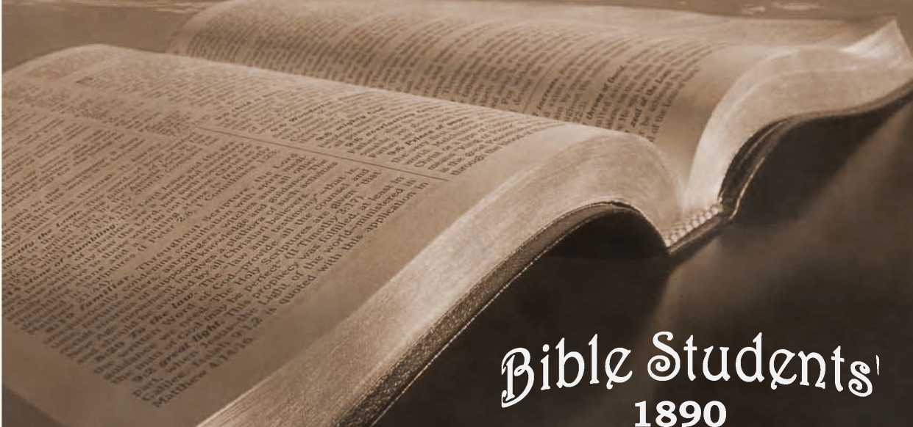
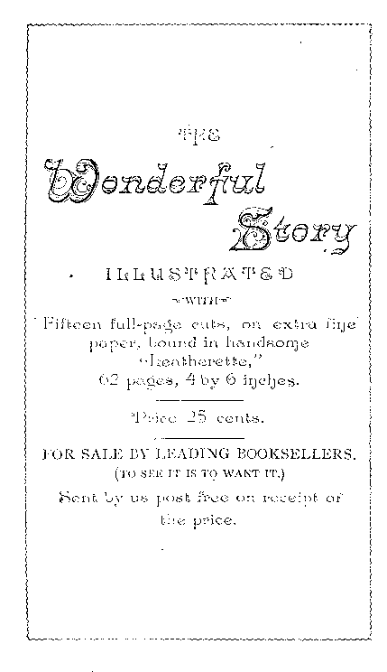

No. 7—The Wonderful Story of Wisdom, Love and Grace Divine

WOJWEpFULx- 8T®pY.
THE OLD, OLD STORY.
Earnest Inquirer.—
1AELL me the old, old stoi'y.
Some say from heav’n above, One, Jesus, left great glory To show to men God’s love.
Tell me the story simply, As to a little child;
For I with sin am wearied, Dissatisfied, defiled. '
Tell me the story slowly, That I may take it in— That story of redemption, God’s remedy for sin.
Tell me the story clearly, Flow Christ a ransom gave.
O friend, am I the sinner
Whom Jesus came to save?
Young Christian.—
Tell me the story often, For I forget so soon;
The early dew of morning Has passed away at noon.
Tell me the same old story When you have cause to fear, That this world’s empty glory Is costing me too dear.
Christian in affliction.—
Tell me the story always, If you would really be, In any time of trouble, • A comforter to me.
Tell me the story sweetly, In calm and soothing strain, And let its blessed message Refresh my soul again.
Yes, and while coming glory Is dawning on my soul, Tell me the old, old story:
’Twill help me reach the goal.
THE RESPONSE.
You ask me for the story How Jesus, from above, Left all his heavenly glory, To prove that God is love.
Well, you shall have the story, The old, old story, too;
And I am pleased to tell it; To me ’tis always new.
I’d gladly tell to some one These tidings every day.
I never should grow weary Of pointing out the way—
The way to life and glory, Whose end is bliss complete, In wThich the blest old story
Directs our willing feet.
And as you hear these tidings Of joy and peace, you’ll see
They’re not the awful warnings Of endless misery;—
Of a death “ whose pang outlasts The quiv’ring, fleeting breath,” Round which “eternal horrors hang,” '5 A never dying death. r
And this, the hopeless doom for all Except a “ little flock.”
You see they do not comprehend The precious old, old Book—
But as the herald angels sang, Good news without alloy, 1
Which yet “ shall to all people be Good tidings of great joy.”
The story of our mournful fall f From Eden’s blissful state, Into the depths of sin and death, J Called pity forth so great—
That, from his shining courts above, God sent his own dear Son, § And by his full empowered arm, For us deliv’rance won.
Not in a way which set aside
His wise and just decree, That whosoe’er his law defied
Must therefore cease to be, ||
But by rend’ring unto Justice
The fullest satisfaction, *
That thus he might be just, and still
Perform the great transaction—
Saving a lost and ruined race To endless life and glory.
This is the burden of his plan, So I’ll begin the story.
THE FALL AND THE PROMISED REMEDY.
In Eden’s pleasant garden f
God placed a perfect pair;
<, Their surroundings were delightful, { j Their eternal prospects fair.
; But soon they disobeyed him
In the only thing denied: J Forbidden fruit they tasted, ; So in course of time they died. | Yet even with this sentence, ? God’s mercy was declared §
In a promise of redemption, j Through the woman’s seed prepar’d.
) Should bring to all the rest
< The boon of life thus promised, / And all through him be blest.
5 *Rom. 3: 24-26; j- Gen. 2: 8-15 ; |2; 16; § 3 :15. '
He should indeed be Son of Eve, : But Son of God as well; *
J And bring a full salvation, |
The Holy Scriptures tell.
Thus as a new creation— i The Son of God by Eve, No trace of condemnation
I Would he from man receive, t ) T
; Thus escaping condemnation
: That fell on Adam’s race.
As a suitable oblation
He’d take the sinner’s place.
He did not come of sinful blood, Though by a human mother,
His spotless life was but transferred When he became our Brother.
And thus for us was he made poor Who once in glory reigned, §
Eternal riches to secure
For man, to life regained.
THE FULFILMENT BEGUN.
Four thousand years had passed away, ? Adam and Eve had died,
And all mankind were struggling
* Luke I : 35; -f I Tim. 2: 5, 6; $ Matt. 1: 20
23; Heb. 7 : 26; % Phil. 2 : 6-9.
I One night some shepherds, watching On fair Judea’s plains, *
A heavenly light saw streaming, And heard angelic strains.
Of God’s and Christ’s great love.
[It was not only love of Christ, J
Who planned the great deliv’rance,
Who “sent'' his well-beloved Son, ;
And thus his love commended § '
In this great plan his love devised, :
Which Christ was pleased with too: L
Both love of God and love of Christ || !
Are thus brought to our view.] ;
He came to bring good tidings—
For Christ, your new-born Savior, j
Luke 2: 8-12. f John 3: 16,17. g Rom. 1
5:8. || Iieb.lO:4-7; Psa. 40:7,8.
And a multitude, of angels *
1 Joined in an anthem then: . “ Glory to God in the highest!
Peace on earth ! Good will to men !”
\ And was that strange new story true? j They went at once to see, f And found the babe in a manger.
I Yes, it was truly he—
j The Seed that had been promised
3 So many ages past, j Had come to save lost sinners: j Yes, he had come at last.
THE MAN CHRIST JESUS.
:> The babe to lovely boyhood grew, ? And then to manhood’s prime; ; Then, “ Lo, I come, Thy will to do, O God,” he said, “ not mine.”
He did his work so faithfully; It was his heart’s delight, J To show the path of duty, j From early dawn till night.
He heard of sin and sorrow With sympathetic ear,
His words were like a healing balm j For trouble and for fear.
:> * Luke 2 : 13,14. f Luke 2:16.
He, too, was a man of sorrows, * Acquainted with our grief, Hence his sympathy a brother’s j Which brought with it relief.
Indeed, of him it is written, f Our sorrows he did bear,
And all our griefs he carried, too;
j O, what a load of care!—
; And that ho bore our sickness, J When he gave the healing balm, And virtue from his body went, § j Men’s sufferings to calm.
! Thus from the day of his baptism His sacrifice began;
And then he said, “ It is finished,” || | When he gave his life for man.
OUR RANSOM SACRIFICE.
i Such was “the man Christ Jesus,” Savior of fallen man:
i You’ve heard of his death so tragic, Yet part of God’s good plan.
I Wicked priests stirred up the people > To clamor for his life, ? And the Roman Judge was feeble And yielded to their strife.
* Isa. 53 : 3. f Isa. 53 : 4. f Matt. 8:17.$ Mark
5 ■ 3o; John 17:4; 19 : 30.
So the Lamb of God, Christ Jesusr Was crucified and slain,
Though not a proof was given Of any sinful stain.
Meekly for us he bore disgrace
And undeserved pain,
Submitted to the cruel cross, For our eternal gain.
Look, dear one, if you can bear it, Look at our dying Lord;
Draw near the cross; behold him;
Behold the Lamb of God !” *
How his hands and feet are mangled, And before his loving face,
Hard, cruel men stand mocking At his undeserved disgrace.
A crown of thorns they’ve placed upon His truly royal brow;
How little do they comprehend The “ King of Glory ” now !
With heartless laugh and cruel scorn They told him to come down,
And leave that cross of suffering And take a kingly crown.
- John 1:29; I Pet. 1:19; Rev. 5 : 12.
But little did they realize
What cost ’twould be to men, Or tl^.t he could have done it *
And spared himself the pain;
And that ’twas love that held him there
A willing sacrifice,
Preferring even death to share, To bring to men release.
Yes, he became man’s surety;
The debt we could not pay
He willingly paid for us, On that dark, dreadful day.
For his Bride, the Church, he suffered, ’Twas for our sins he died;
And. not for our sins only, f
But all the world’s beside.
HOLY, ACCEPTABLE TO GOD.
From infancy to thirty years J
The perfect man was coming;
He there, the Lamb acceptable, §
Became the world’s sin-offring.
At once to John, on Jordan’s banks, He came to symbolize ||
His consecration e’en to death, And, too, that he should rise—
* Matt. 26: 53,54. f 1 John 2 : 2. f Num. 4: 3;
1 Chron. 23: 3; Luke 3 : 23. % Gen. 22:8; John
I : 29, 36. || Luke 3 : 23.
Be lifted up by God’s own power,
That death, led captive in that hour,
Should prove him strong to save. <
Thus, with our Lord, this solemn rite <
No sins had he to wash away,
No evil to restrain.
His life, without one sinful spot,
Was pleasing in God’s sight: *
Even his enemies found naught T [
But what was pure and right. ;
Assured of this, the prophet John
From such a task drew back, J Saying, I’ve need to be baptized of thee, i
In whom there is no lack.
And comest thou to me, to be
Baptized in Jordan’s wave?
Yea, Suffer it to be so now,
Said he who came to save.
This speaking symbol did proclaim
His consecration and his faith—
That he should rise in God’s own name, Though faithful unto death.
* Heb. 9:14; I Pet. x : 19; Matt. 3:17.4 John 7:46, f Luke 23: 4,14-22.
HIS EARTHLY MINISTRY.
His station in life was lowly;
He was a working man: * Hence knew the poor man’s trials
As only a poor man can.
The three years of his ministry After the age of thirty,
Were busy years of toils and cares, Teaching the way of duty:
The duty of love to God and man, Which is the law’s fulfilling; | And then of trust in God’s great plan To save all who are willing. J
His mighty works in those three years But shadowed forth his glory; § His kingly ministry will end The scope of this old story.
As when he opened blinded eyes, And unstopped deafened ears, And even waked the dead to life, And gave sweet smiles for tears, So, then, he’ll cause the blind to see, And all the dead shall hear; || And his kind hand, from every eye, Shall wipe the falling tear.
* Matt. 3 :13,15; Mark 6 : 3. f Matt. 22 : 37— 40; Rom. 13 :10. $ Mark 1: 15 ; 9 : 23; II: 24; John 11:40; Rev. 22:17. § John 2:11. || Isa. 29 : 18,19; 35 : 5, 6; John 5 : 28, 29 ; Rev. 21:4. j Beauty he’ll give for ashes, oil
? Of joy for heaviness; * And in the end, with joy and praise,
j Rightness and peace shall kiss.
i In his teaching was the freshness ' And simplicity of truth,
i Which corrected false traditions
| Men had cherished from their youth.
J Many said, ‘‘This Jesus speaketh
> As ne’er before man spake; f j With authority he teacheth:” j Yet his words they would not take.
I His sacrificed humanity ’
i Remains an off’ring still, J < Though as the high exalted One, > He lives to save who will.
? HIS COMING REIGN OF GLORY AND
| BLESSING. ,
? He lives; and at his coming, § He’ll wake men from the dust—
j In the glad Millennial morning When all will learn to trust.
> * Isa. 61:3; Psa. 85:10; f John 7:46; Matt.
7:28,29; Mark I : 27, 28. j Matt. 13 : 46; 20 :
j 28; John 6:51; 1 Cor. 15:21; 1 Pet. 3:18;
s Phil. 2:9; Heb. 7:25; § Acts 3 : 19-21.
Then he’ll banish sin and sorrow * And triumph o’er the grave,
When from death,on that glad morrow, Earth’s ransomed hosts he’ll save.
Yes, at the time appointed By the Father’s wise decree, f
The Times of glad Refreshing Earth’s blood-bought hosts shall see.
A highway grand he’ll then cast up, And gather out the stones; |
And up to everlasting life He’ll lead obedient ones.
No lion shall go up thereon, § Nor any ravenous beast;
For all the ills these symbolize, Forevermore must cease.
The desert he will make to. bloom And blossom as the rose; || Beside the lion and the lamb May the young child repose.
For nothing shall offend or hurt In all his holy mountain; |[ And evil, sin and death shall be Washed out in Calv’ry’s fountain.
* Isa. 35:10; 5I.-II; I Cor. 15 : 21,54,57. f Acts 17:31; 3 : 19, 21. f Isa. 35 : 8; 62: IO.
I Isa. 35 : 9, IO. || Isa. 35 : I, 2 ; 11 : 6-9.
----------—- In a thousand years of reigning *
He’ll instruct and train and bless; > And fully he’ll establish them •
* In life and righteousness.
To his Father he’ll present them—
Pure, blameless, without fault; £ And earth’s true lord shall nevermore 1 Be blind or maimed or halt, f ;
With lasting joy and singing |
But of Zion’s wondrous glory
I must give you an account.
JOINT-HEIRS WITH JESUS CHRIST, ? OUR LORD.
But where begins the story § J
Of this “Seed of Abraham?”
How can pen portray thy glory, Thou Bride of God’s own Lamb?
True Zion is a “ little flock,”
The Lord’s own faithful few, [| Who firmly build upon the rock With truths both old and new.
* I Cor. 15 : 25 ; Rev. 5 : IO'; 20:6; Isa. 32:1; I
Jer. 23:5; Gen. 28 : 14. fl Cor. 15 : 24; Matt. 5
25 : 34; Psa. 8: 5-8. f Isa. 35 :5-10. § Gal. 3: 29; Rev. 21: 2,9; Eph. 5 : 31, 32. || Luke 12 : z 32; Matt. 7:24; 13:52; 2 Pet. 1:4.
Called to be sons and heirs of God 5 And Bride of his dear Son, *
They sacrifice the earthly good [
To join the heav’nly One. f
They mark the steps their Leader trod, And in his shining track,
With courage high and faith in God, ! Follow and ne’er turn back—j-
Till life itself goes out in night: )
Faithful unto the end,
They walk by faith, and not by sight, And every talent spend.
Worthy are they to be his Bride, The Bride of God’s Anointed, t S
Whom, for the work of blessing all, Jehovah hath appointed.
This is the New Jerusalem, §
This is the great Mount Zion.
Heav’nly, from God it shall come down; j
Its King is Judah’s Lion. ■
In exaltation these shall shine—
A “ Sun of Righteousness,” ||
They shall be like their Lord, divine, And men and angels bless. * *
* Rom. 8:28; Gal. 4:7; Afls 15 :14. f Rev. 17:14.
J Rev. 3 : 4. § Rev. 21 : 2,10. || Matt. 13 =43; Mal.
4 : 2. 2 Pet. 1:4; I John 3:2; I Cor. 6: 2,3. |
j Now, in her low and trial state, > Despised and scorned of men, This “ little flock,’’the Church bf.Christ, 's 7 7
Delights to follow him
I Her glory and exceeding joy > In symbols now appear; 2 Yet, of that grace without alloy, She has a foretaste here.
Now she’s a troop of “soldiers” Following Christ’s command, 1 His flock of “sheep” well tended, And fed by his own hand, f
She’s a band of the Lord’s “ brethren” 1 Of whom he’s not ashamed,
And the very “ salt of earth,” j The Lord himself has claimed.
.
Ay, more: the “ light of earth ” is she, > Amidst gross darkness shining, §
; Since her dear Lord his light withdrew j From men, the undeserving.
____J A pure and “ virgin ” Church is she, Espoused unto her Eord. 3
? r
But when she has crossed the borders \ Into the promised land,
His glorious Bride and full joint-heir,
She’ll be at Christ’s right hand, y <
Together, they’ll be a “ Priesthood,” j A “Royal Priesthood,” too; J > And their royal, priestly power
Shall make earth’s all things new.
Then, together they’re presented
As King, enthroned and great; §
This Christshall be the Prince of Peace, j “ Wonderful,” “ Counselor;”
A “ Mighty God ” of truth and grace, j Man’s “Everlasting Father.” || j As mighty Prophet, Priest and King, j In “Times of Restitution,” * ; He shall to men salvation bring— j An everlasting portion.
But to share this exaltation, 5 Christ’s Bride must like him be; j And the “first resurrection” f
Shall complete her perfectly.
Though this chief and heav’nly portion ; “The Elect” alone shall gain, Yet for others there’s salvation j From every sinful stain.
; Such of all earth’s many millions
As obey “That Prophet’s” voice J < Shall be pluck’d from death’s dominion, ,! Choosing life, may have their choice, j Yet remember, all this blessing i Which to earth and men shall come j Is dependent on Christ’s coming: ] Hence we pray, Thy Kingdom come. ■) ... .
. To claim hisBride he comes with stealth : Not then to men appearing; [wealth,
,j First she’s endowed with pow’r and > Then comes the world’s great blessing.
. * Aris 3 : 21-23 ; Heb- 7 : 15, 17ri, 2- t 1 John ; 3:2; Rev. 20:6. $ Deut. 18 : 15 ; Aris 3 : 22, 23. j This Christ, the ‘ Sun of Righteousness,’ « Shall rise with healing beams, j And, as the glorious years progress,
Sweet peace shall flow in streams. *
There naught that’s wrong shall be termed right,
; Nor right as wrong appear; -j
< The Lord, the Way, the Life, the Truth, j Shall make the right most clear.
CHRIST’S PAROUSIA AND THE GOSPEL
§ HARVEST.
; When for his Bride the Lord has come,
j With joy and glad surprise,
j His presence she will recognize By faith’s anointed eyes. |
Then soon she will be like him
And see him as he is—§ j When her blessed hope’s fruition
The heavenly Father gives.
j Quickly she hears his welcome voice, Not borne upon the wind;
< Nor in the secret chamber || Does she her loved one find.
5 * Isa. 66:12. f Mal. 3:18. f 2 Cor. 5:16.
i £ I John 3 : 2. || John 10: 4, 5; Matt. 24: 26.
But in the prophecies fulfilled, * And in the signs foretold,
By faith, with fullest confidence, She doth her Lord behold.
For him she long has waited
And watched by night and day; And, for his promised kingdom, She has never ceased to pray, f
Christ’s appearing to the world at large
Will be in wrathful token, J With “iron rod” and heavy scourge,
Because God’s law they’ve broken.
Human pride will not be willing
To yield to his control;
And selfishness will aggravate The weakness from the fall.
The kings of earth and lords of lands,
The rich and clergy, too, Will cling to pow’r within their hands
As erst they used to do.
“ A time of trouble ” there shall be
On every tribe and nation;
With fear and trembling earth shall see
Her greatest tribulation. §
* Matt. 24: 33. f Matt. 6 : 10. J Matt. 24:30; Rev. 1:7; 2:27. £ Dan. 12:1.
Empires and thrones shall disappear, <
And on their ruins God will rear
God’s Kingdom—then shall rise.
That is the good time coming, though f
Whose gathering shadows even now, J
’Twill teach mankind the lesson
That sin brings tribulation, -
Then fetters and bonds all broken, <
The bow of peace, God’s token,
Knowledge of God shall fill the earth <(
As waters cover the sea; J [mirth < And praise, thanksgiving, and voice of '
* Hag. 2: 7. f Adts 3 : 19-21. J Isa. 11:9. t
There joyfully men will press along The highway to perfection, *
With faith and hope and courage strong Under divine direction.
When crowned at last with perfect life And everlasting joy, [praise—
They’ll raise to heaven their notes of
Through Christ this Victory ! f
[And those who shall refuse him— Few, exceptions of the race—[earth, Who, when clear knowledge fills the Reject the proffered grace— $
These shall no further thus proceed: A second time they’ll die;
They’ll be cut off, as God hath said The soul that sins shall die.
Their souls, redeemed by Jesus’ blood From the Adamic fall,
They’ll forfeit by not willing good, The terms of life to all.] J
THE RANSOM, THE BASIS OF BLESSING.
Thus will the work be finished Because our debt was paid, Because on Christ, the righteous, The sin of all was laid.
* Isa. 35:8. f Rev. 5:13. J Adis 3:23; Heb. 6 : 4-6; 10: 26.
Wherefore, because Christ did this He’s now exalted high, * [work, To nature and to power divine, f
t Never again to die.
O, this wonderful redemption!
God’s remedy for sin;
The way to life is opened J That all may enter in.
Who, who hath been God’s counselor?
I Or who hath known his mind ? § Not one of all the heav’nly host, ? And surely not mankind.
This wisdom, power, love and grace, His blessed Word reveals,
? Are but the beamings of his face
5 In whom all goodness dwells.
j THE JOYFUL STORY.
j Thus runs the old, old story.
1 t>o you now take it in?—
I This wonderful redemption, God’s remedy for sin.
j Search the Scriptures, and believe it;
! The Bible says it’s true;
> ’Tis provided for all sinners, And therefore meant for you.
< * Phil. 2:8-11. j- Rom. 6:9; Matt. 28:18.
< j 2 '1'im. i:io. $ Rom. 11:33-36.
Then take this great salvation, j .. Which our Father loves to give; t
Just now by faith receive it, I
In due time you shall live.
And since this simple message
Brings peace and joy to you, j
Make known the wondrous story;
For others need it too.
Go tell the blessed tidings
That legally we’re free * $
From sin and pain and dying,
To live eternally.
By faith enjoy the prospect now, j
And by and by fruition; | \
Let every act of life now show
Your thanks for this, salvation.
Soon shall our eyes behold it— Salvation from above!
Of precious, heavenly love. |
EXPERIENCE AND JOY OF THE SAINTS.
That wondrous love to prove. ;
“ I love to tell the story, Because I know it’s true;
It satisfies my longings
As nothing else would do.
“ I love to tell the story !
More wonderful it seems Than all the golden fancies Of all our golden dreams,
“ I love to tell the story !
It did so much for me;
And that is just the reason
I tell it now to thee. ,
“ I love to tell the story !
’Tis pleasant to repeat .What seems, each time I tell it, More wonderfully sweet.
“ I love to tell the story, For some have never heard .The message of salvation
From God’s own holy Word.
“ I love to tell the story !
For those who know it best Seem hungering and thirsting To hear it, like the rest.
“ And when, in scenes of glory, I sing the new, new song, ’Twill be the old, old story That I have loved so long?’
PROMOTION OF CHRISTIAN KNOWLEDGE. < • .......
No. i. Do the Scriptures Teach that Eternal ;
' 'Torment is the Wages of Sin ?
No. 2. Calamities— Why Sod Permits 'Them. ! No. g, Protestants, Awake! How Priestcraft now <
No. 4. Dr. Talmage1s View of the Millennium. J No. g. Bible Study and Students' Helps.
No, 6. The Hope of the Groaning Creation. J No. p. The Wonderful Story—The Old Story. \ No. 8. The Wonderful Story—with 15 Illustra- 1
tions, 64pages, Price 25 cts., (with re- J mainder of i8gi series}.
We specially commend, both to honest skeptics ; and to saints, “ The Plan of the Ages.” No other j book of its size, known to us, so fully unfolds the di- f vine plan revealed in the Scriptures. It is a veritable ; “ Bible Key,” and is well described as “ A Helping i Hand for Bible Students.” We cansuppy it by mail, j cloth bound, for $1, or in paper covers for 25 cents ; < or we will loan it to the poor, who will promise a ; careful reading and to pay return postage. \
Tower ®Bible & Tract, ©Society,
" ALLEGHENY, PA., U. S. A. I
“HOW READEST THOU?”
—Luke io : 16.—
’Tis one thing, friend, to read the Bible through, Another thing to read, to learn and do;
’Tis one thing, too, to read it with delight, And quite another thing to read it'right.
Some read it with design to learn to read, But to the subjedt pay but little heed;
Some read it as their duty once a week, But no instruction from the Bible seek.
Some read to bring themselves into repute, By showing others how they can dispute; Whilst others read because their neighbors do, To see how long t’will take to read it through. Some read the blessed Book,they don’t know why; It somehow happens in the way to lie;
Whilst others read it with uncommon care, But all to find some contradictions there.
One reads with father’s specs upon his head, And sees the thing just as his father did ;
't'
Another reads through Campbell or through Scott, And thinks it means exactly what thought. Some read to prove a pre-adopted creed, Thus understand-but little what they read; And every.passage in the Book they bend Tixmake it suit that all-important end. SopnC-peopIe read, as I have often thought, To teaclr-the Book instead of to be taught.
Luke 2: io; f Gen. 3; J Gen. 2: 17, margin; Rom. 5 : 12; 6 : 23 ; $ John 3:16; || Job 14 : 14, 12,13, 15 ; 10: 19; Psa. 146 : 3, 4; 90:3; Matt. 7:13.
I Cor. 10:17. f 2 Tim. 2:3,4; John xo:
1 4-15 ; Psa. 23. J Heb. 2 : II; 3:1; Matt. 5 :13.
5 g Matt. 5 : 14, 16; John I : 4, 5; John 9:5;
I 12 = 35-
I
2 Cor. 11:2; Mark 13:35; Psa. 45 : 10, II, S 13,14. j- Rev. 19:7; Rom. 8:17. f 1 Pet. 2: j. 5,9; Rev. 21 : 2, 5. § Rev. 3:21; 20:6; Col. j 1 : 18. |.| Isa. 9 : 6. <